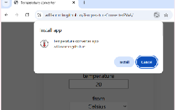
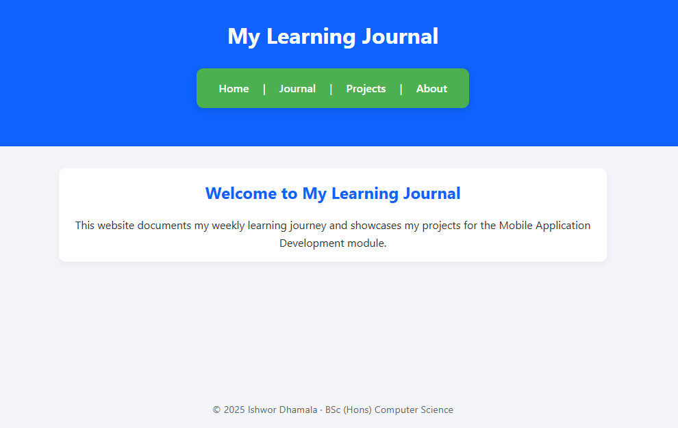
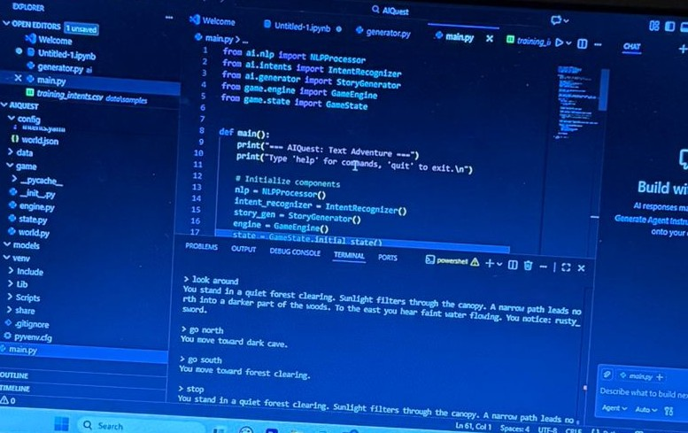

My Projects
Here you can find all my projects created throughout the Mobile Application Development module, with screenshots and GitHub links.
PWA Temperature Converter App
This is my first Progressive Web App. It converts temperatures between Celsius and Fahrenheit and can be installed directly from the browser.
Learning Journal Website
This project is the responsive Learning Journal website that documents my weekly progress and showcases my projects.
AI powered Text Based chatbot
I built an AI-powered tex-based chatbot that responds to user input in a naturak and conversational way. The main goal was to create a simple but interactive system that could understand basic requires and return helpful answers. While developing the cahtbot, i learned how to responses using conditional logic. I also explored how AI behaviour can be siluated without usinf full machine-learning modles.